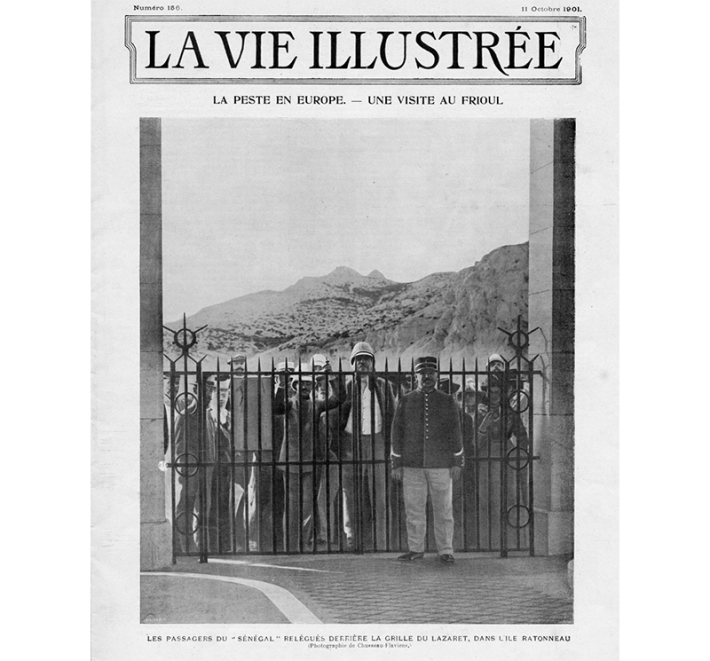

Hantavirus is a zoonotic disease that has been hitherto unknown to the American public, with the potential exception of the 1993 Four Corners outbreak. Only a few thousand cases of hantavirus infection are reported each year in Europe, according to the World Health Organization’s estimate. And globally, the Andes strain of the rodent-borne virus, which is endemic in the Southern Cone, sees “limited human‑to‑human transmission among contacts.”
Why, then, is a hantavirus outbreak aboard a cruise ship, which has so far infected 11 people, generating so much media exposure and attracting public interest?
Some may argue that this is an aftereffect of the COVID-19 pandemic and the symbolic, if not epidemiologically significant, role that cruise ship outbreaks played in it. Others may deplore it as a spectacle of global health coordination—when in reality, infectious-disease containment and public health programs more broadly across the Global South are destabilizing as a result of the United States defunding the sector, leading to hundreds of thousands of deaths. Or, by contrast, one may see this as a demonstration of the World Health Organization providing a much-needed lifeline to health diplomacy.
Thus, the hantavirus, from its humble abode among rodents, has suddenly found itself caught in the limelight between scientific concern, media sensationalism, and global health melancholia. Still, the question remains: Why do cruise ship epidemics, from the Diamond Princess to the MV Hondius, attract social and political commentary in a manner so disproportionate to their epidemiological significance?
To begin answering this question, we need to step back and consider how diseases and ships—and more recently outbreaks aboard cruise ships—have shaped our modern epidemic imagination.
Ships had been indicted for introducing epidemics to new locations since Thucydides, the Greek historian, obliquely hinted at a naval introduction of the “plague of Athens” during the Peloponnesian War. Suspected as vessels of disease, such as the Black Death in Europe’s case, ships eventually came to play a key role in debates about quarantine during the 19th century.
Most historical attention has focused on debates about ships as maritime bridges of port-to-port contagion. More recently, historian David Barnes has shown that cargo boats, in particular, were also seen as environments that fostered the self-generation of disease, implying that ships not only carry diseases but also produce and spread them to ports of call. This dual role of the ship as both a spreader and a generator of disease was hotly debated amid the devastating cholera and yellow fever epidemics of the mid 19th century.
Following the bacteriological revolution later in the century, international sanitary conventions continued to debate quarantine and disinfection measures for passenger boats, usually those carrying migrants or Muslim pilgrims, as well as for cargo boats. If the newly achieved ontological stability of the cause of epidemics (pathogens) provided common ground on which medical scientists, port authorities, and governments could discuss maritime quarantine, this did not mean that a consensus was easily reached on how diseases spread across the seas or what was needed to halt their propagation. In fact, it would take an absolutely devastating bubonic plague event for a consensus to be reached.
The Third Plague Pandemic, triggered by the bacterium Yersinia pestis, had its roots among wild rodents in Yunnan, a southwestern province of China. It eventually reached the British colony of Hong Kong in 1894. From there, it quickly spread across the globe, becoming a pandemic by 1900, causing between 12 and 15 million deaths.
Often forgotten today, this plague pandemic provided a blueprint for pandemic response: developing vaccines, implementing isolation and quarantine based on incubation periods, implementing infrastructure changes to prevent transmission pathways, launching eradication campaigns against suspected vectors, and demanding behavioral change from affected communities.
Rats only gradually came to play a key role in these anti-pandemic campaigns. Lacking agreement on whether experiments identifying fleas as the rat-human vector were valid, medical scientists and public health authorities initially hesitated to single out the rat as the spreader of plague in cities and towns during the first years of the pandemic, when it was largely confined to China and India. The plague’s global spread from 1899 onwards, however, forced them to refocus. By 1903, scientists became convinced that, as far as the maritime spread of plague was concerned, rats should be singled out as the key culprits.
That was thanks to ships. At the time, in what were called “naval epidemics,” medical experts had begun to notice that plague developed in members of the crew just as rats were discovered to be dying of the disease. And there was one naval epidemic in particular that solidified the belief that rats spread plague both between ports and within boats.

ALL ABOARD: Passengers from the S.S. Sénégal behind the gates of the lazaretto on Ratonneau Island, in the Frioul archipelago off Marseille. “La Vie Illustrée,” October 11, 1901.
The ship in question was the S.S. Sénégal, a boat famous during the inaugural 1896 Olympics in Athens for carrying celebrities. In the summer of 1901, the French scientific society that published the journal “Revue générale des sciences pures et appliquées” organized a cruise aboard the S.S. Sénégal around the Mediterranean. There were 174 passengers, most of them scientists and inventors, such as the pioneer of cinema Léon Gaumont, as well as politicians, like the future Prime Minister and President of France, Raymond Poincaré. They were to enjoy a science-themed trip calling at Rhodes, Cyprus, Syria, Palestine, Egypt, and Malta.
The Sénégal boarded its passengers and sailed from Marseille on September 14. Soon, however, one of its sailors, Marius Fabre, fell ill, and before reaching the Aeolian island of Lipari, plague was declared on board. The cruise ship was forced to return to Marseille, where it was placed under a week-long quarantine at the Frioul lazaretto, on an island off the coast of the French port city, with investigators uncovering heaps of dead rats. The well-heeled passengers were then placed under quarantine in the Spartan rooms of the lazaretto, stirring intense public interest.
The press at the time expressed horror at the confinement and provided sobering testimonies by and photos of the confined passengers. Were these to have been migrants, colonial subjects, or pilgrims to Mecca—cohorts regularly subjected to disease-related quarantines across the French Empire and beyond—nobody would have paid the slightest attention to the incident. However, it was instead a lofty slice of the French elite that suddenly found itself exposed to rat-borne plague and subjected to quarantine on a barren island, no less on a vessel embodying modernity and progress.
The cruise ship crisis was eventually resolved, and on September 26, passengers were released. Relieved of having regained his freedom unscathed, one passenger, Gustave Austran, composed a poem titled “The Ballad of 80 Dead Rats,” which began like this:
Maritime Passengers
Embarked without too much hassle
Subtle rodents and merry rats
We set off from Alexandria
We were all plump and fat
But, alas! The nasty adenitis
Made our obese paunch swell
And soon, victims of fate
In the Senegalese hold
We became eighty dead rats.
For the scientific officialdom, though, the debacle left its mark. It seemed to validate the warning of a key anti-rat crusader at the time: Danish civil engineer Emil Zuschlag, who had argued that modern civilization fostered plague through fast transoceanic and land-based transport, as well as the Industrial Revolution. This, he claimed, disturbed the “equilibrium” between humans and rats. Indeed, if a celebrated vessel like the Sénégal—which had been meticulously examined for plague before boarding its passengers in Marseille—could still carry plague-transmitting rats, then no ship was safe, and no port of call either.
Today, the infected cruise ship is once again a space turned upside down. It is a space of privilege where one is supposed to leave behind the demands and stress of industry and politics, relishing exotic sights and the good life from the comfort and safety of one’s cabin, only to be found instead in the floating epicenter of an epidemic. It is an escapist folly turned percolator of disease, which, rather than stopping fleetingly at sites of interest, becomes stuck in a quarantine station, with the comfort and privacy of salons and cabins giving way to the harshness of quarantine dorms, and one’s life exposed to the public’s curious and not always sympathetic gaze.
We saw the reemergence and reworking of that topos a century later, in the case of the Diamond Princess. In February 2020, it became the epicenter of media and public attention when COVID-19 struck. With over 700 passengers becoming infected in the early period of the pandemic, the cruise ship was quarantined in Japan for roughly a month as the whole world watched. The incident captured the public imagination in conflicting ways—with some denouncing the quarantine as draconian and others calling containment chaotic—and led to extensive debates over transmission pathways, the legal aspects of epidemic control, and the economic impact.
Before this event, the metaphor of cruise ships as “floating petri dishes” had been used to describe gastrointestinal outbreaks on board, without indicating them as a risk to off-board public health. However, the COVID-19 twist linked cruise ships to older epidemiological imaginaries of the maritime spread and percolation of diseases, which turned these vessels into infrastructural “hot zones”—another trope that has been mobilized since the 1990s through movies like 1995’s Outbreak and Richard Preston’s 1994 book The Hot Zone.
The hantavirus cruise ship outbreak adds another layer to this narrative: Rather than being one among many sites of infections—like the Diamond Princess was in the case of COVID or the Sénégalin the case of plague—MV Hondius is portrayed as the original locus of the epidemic, with the zoonotic infection site (yet to be confirmed) being largely sidelined in this story of epidemic origins. And yet, it may be argued that cruise ship outbreaks, like the current hantavirus outbreak, attract disproportionate public attention not because they introduce anything original into the public sphere, but because of their routinization within well-established epidemic imaginaries.
Over and over in comments online and offline, one hears iterations of: Not again, not another cruise ship. Scientists are right to stress the biological distinctions between COVID and hantavirus, but perhaps in so doing, they miss a key point: While the two viruses are incomparable, the events unfolding before our screens seem to follow a familiar, indeed banal, pattern. Most people have very little time to understand virology or engage with complex evidence about transmission pathways, incubation periods, or R0. Instead, they readily relate to symbolic stories of ships as constant emblems of life turned upside down—fun turned to horror, relaxation into illness, sociality into transmissibility.
Global health experts and medical anthropologists have long stressed that we need to take the perceptions of those affected by diseases and those at risk of them seriously. It is thus necessary to take seriously the sense of banality and repetition elicited by cruise ship outbreaks. We should reflect on what they mean for the way we inhabit the world today, and foster effective epidemic response. As a banal exception, as a routinized outlier, the infected cruise ship is a trope here to stay; it is up to us not to let it hamper global health. 
This article is reprinted here with permission fromMIT Press Reader.
Lead image: Wellcome Collection / Wikimedia Commons
Källförteckning
- Originalartikel: https://nautil.us/poop-cruises-are-no-laughing-matter-1281155/